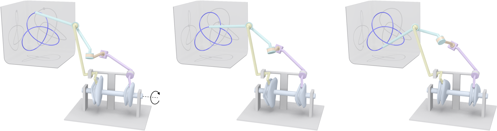
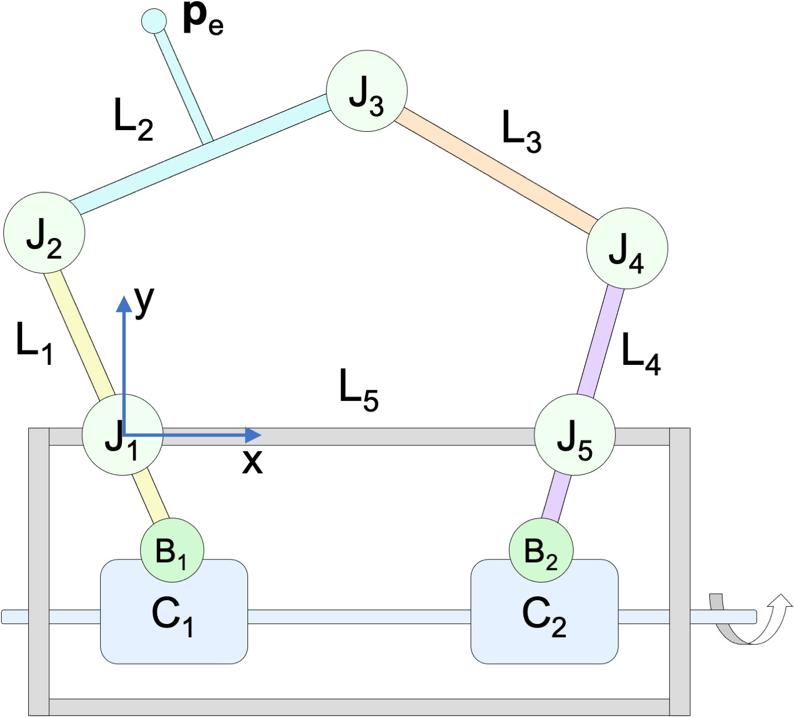
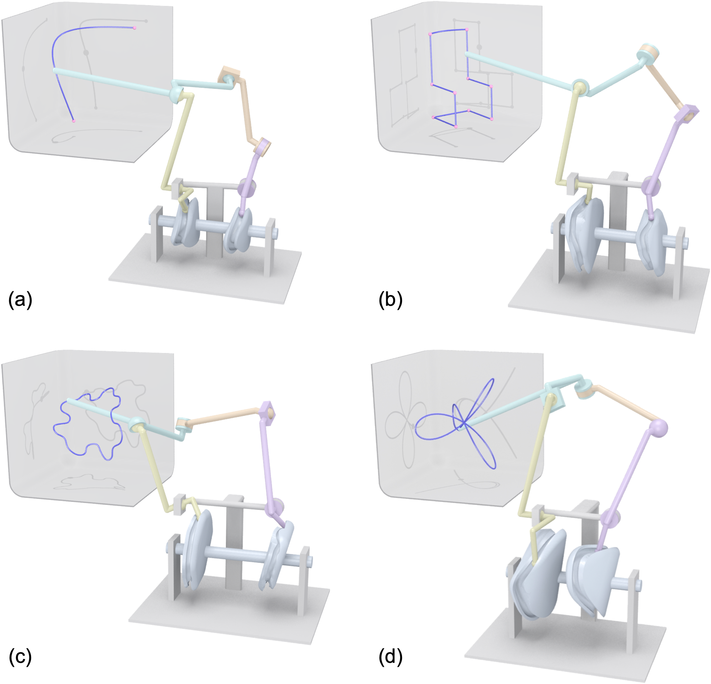
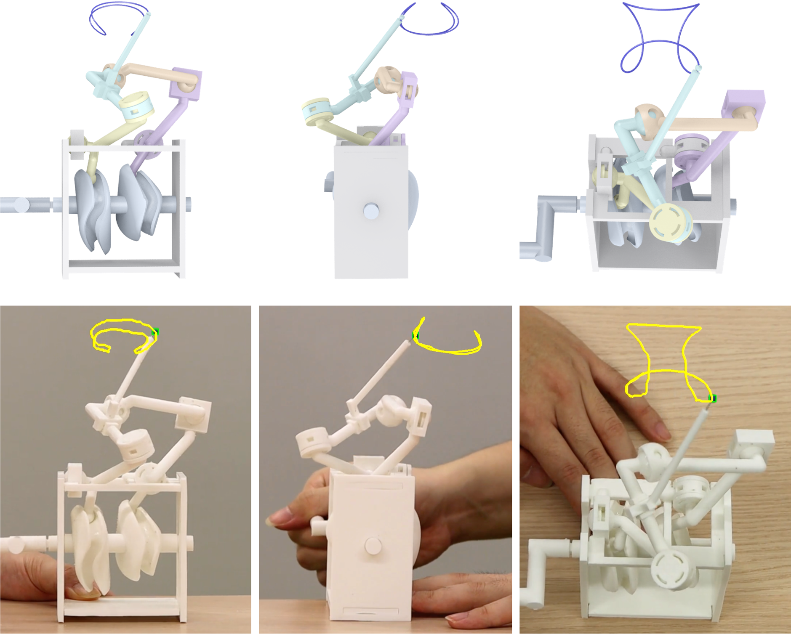
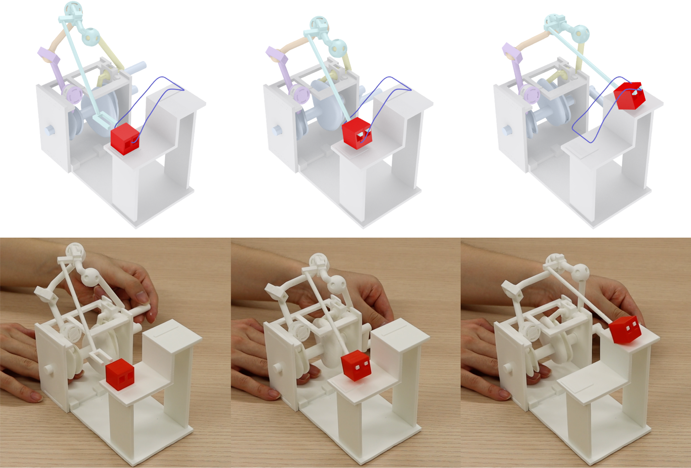
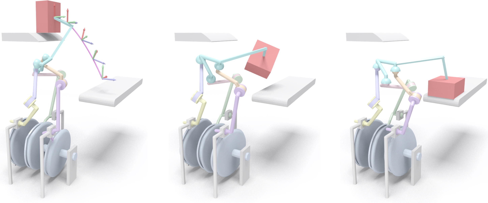

Exact 3D Path Generation via 3D Cam-Linkage Mechanisms
Figure 1: We present a new 3D cam-linkage mechanism that can exactly generate a user-specified 3D path such as the Trefoil Knot curve shown here, driven by a single actuator (indicated by a circular arrow on the left).
Abstract
Exact 3D path generation is a fundamental problem of designing a mechanism to make a point exactly move along a prescribed 3D path, driven by a single actuator. Existing mechanisms are insufficient to address this problem. Planar linkages and their combinations with gears and/or plate cams can only generate 2D paths while 1-DOF spatial linkages can only generate 3D paths with rather simple shapes. In this paper, we present a new 3D cam-linkage mechanism, consisting of two 3D cams and five links, for exactly generating a continuous 3D path. To design a 3D cam-linkage mechanism, we first model a 3-DOF 5-bar spatial linkage to exactly generate a prescribed 3D path and then reduce the spatial linkage’s DOFs from 3 to 1 by composing the linkage with two 3D cam-follower mechanisms. Our computational approach optimizes the 3D cam-linkage mechanism’s topology and geometry to minimize the mechanism’s total weight while ensuring smooth, collision-free, and singularity-free motion. We show that our 3D cam-linkage mechanism is able to exactly generate a continuous 3D path with arbitrary shape and a finite number of C0 points, evaluate the mechanism’s kinematic performance with 3D printed prototypes, and demonstrate that the mechanism can be generalized for exact 3D motion generation.
Download
Paper PDF(~21M)
Supplementary Material(~3M)
Source Code
Video
Results
Figure 2: An illustration of our 3D cam-linkage mechanism, which consists of five links {Li}, five link joints {Jk}, two 3D cams {Cj}, two cam joints {Bj}, one end-effector point pe, and a support structure (in grey).
Figure 3: Our 3D cam-linkage mechanism exactly generates a 3D path with a variety of shapes: (a) Bézier curve, (b) Chair, (c) Puzzle Piece, and (d) Conical Rose.
Figure 4: Evaluating the kinematic performance of our mechanism. (Top) Our designed mechanism in front, side, and top views, respectively. (Bottom) Corresponding views of our 3D printed prototype, where the generated path is tracked on video images and visualized in yellow.
Figure 5: Designing and fabricating a low-cost manipulator to perform a pick-and-place task by using our 3D cam-linkage mechanism.
Figure 6: Generalizing our 3D cam-linkage mechanism for exact 3D motion generation, which consists of three 3D cams and eight links.
Acknowledgments
We thank the reviewers for their valuable comments, Ke Chen for proofreading the paper, and Robert Ferréol for providing equations of some input parametric curves. This work was supported by the SUTD Start-up Research Grant (Number: SRG ISTD 2019 148), and the National Natural Science Foundation of China (62025207).
Bibtex
@article {Cheng-2022-3DCamLinkage,
author = {Yingjie Cheng and Peng Song and Yukun Lu and Wen Jie Jeremy Chew and Ligang Liu},
title = {Exact 3D Path Generation via 3D Cam-Linkage Mechanisms},
journal = {ACM Transactions on Graphics (SIGGRAPH Asia)},
volume = {41},
number = {6},
pages = {225:1 -- 225:13},
year = {2022}}